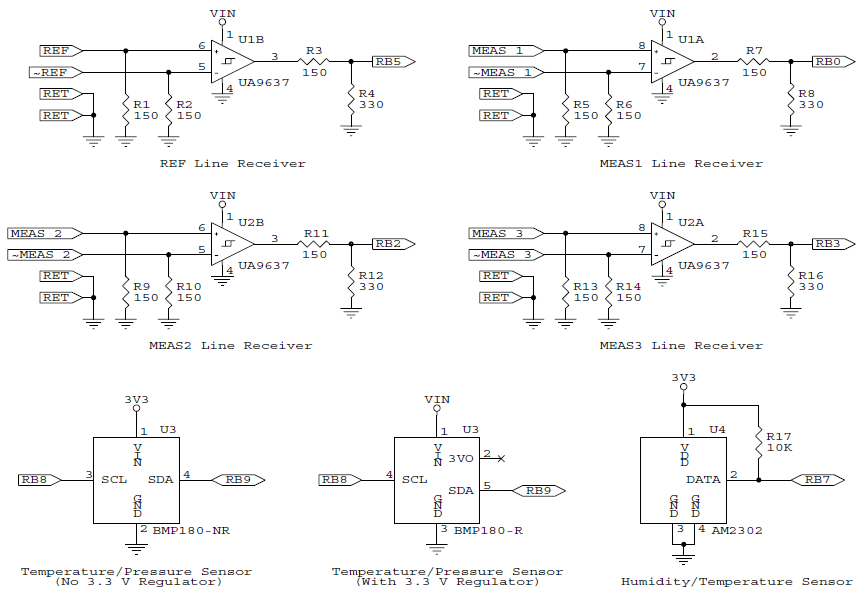
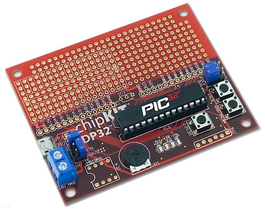
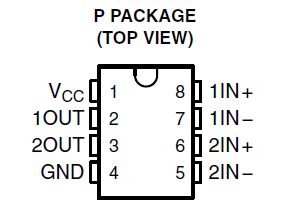
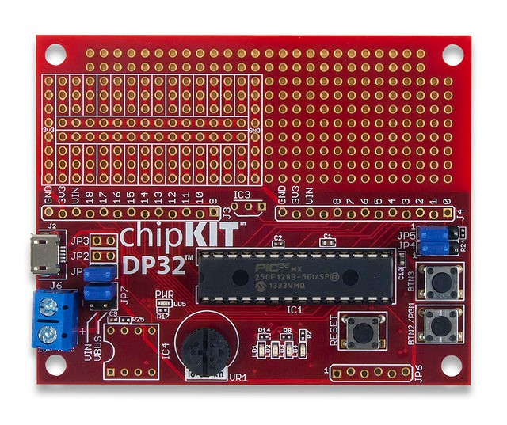
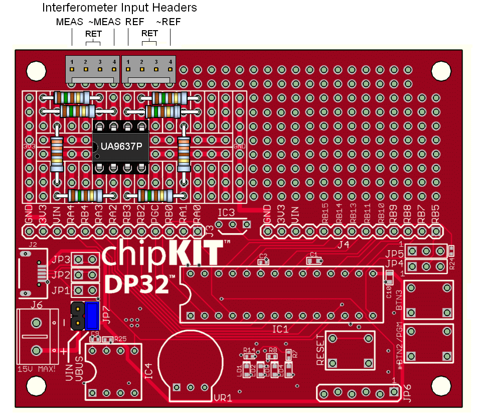
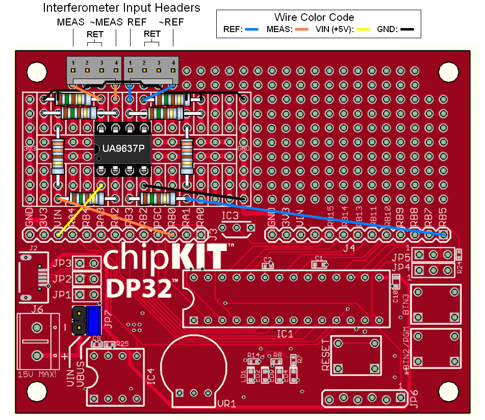
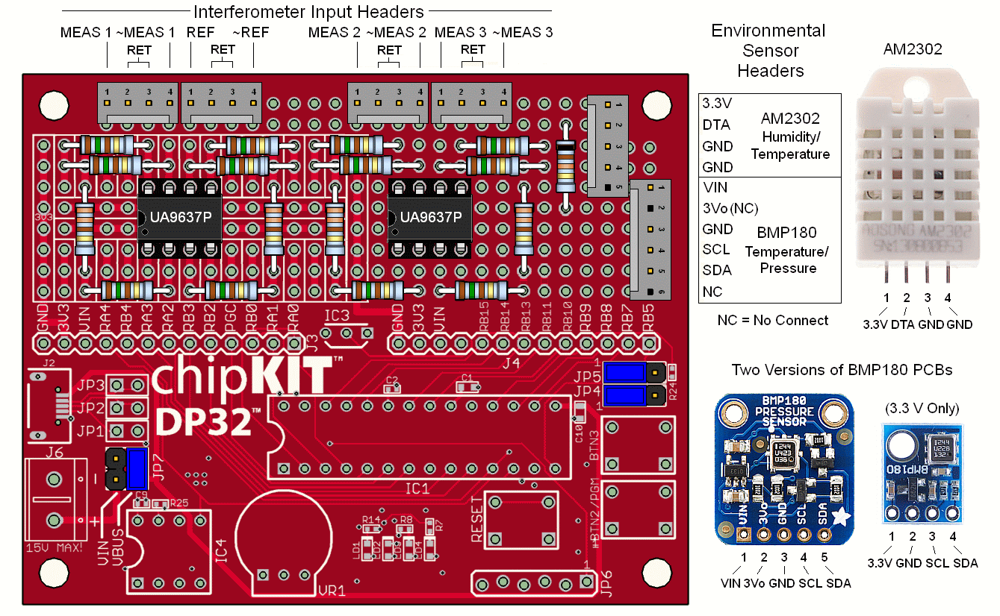

Note: Environment sensors are a works in progress. The parts may change, so it is recommended that these not be added just yet. Or perhaps forever as the engineers quit in protest due to support issues with the sensor C programming libraries. :( :)
Parts for single axis system without environmental sensors
Designing your own PCB is also an option since for µMD1, not much is needed on the board besides the PIC32MX250F128B microprocessor (under $4 from Digikey). But this requires a device programmer to install the boot loader (or upload the firmware) since the PIC32 won't come with the boot loader in NVRAM.
All resistors are 1/4 W for chipKIT, 1/8 W for SG-µMD1, though 1/4 W resistors can be installed standing up. Typical connectors are TE Connectivity AMP MTA-100 series header (PN 640454-4), shell (PN 1375820-4), and pins (PN 1375819-1), though similar parts are available from Molex and others. (However, header and shell/pins may need to come from the same manufacturer.) And you're perfectly free to use your own favorite parts for these, or wire the cables in directly. An electronics distributor like Digikey will have all these parts (except now for the chipKIT DP32).
Additional parts for 2 or 3 axis system
For a system with 2 or 3 axes, double everything associated with the RS422 line receivers and add a 4 pin header, shell, and 4 pins for each additional axis.
Additional parts for temperature, pressure, and humidity sensors
Since environment sensors are a works in progress, it is recommended that these not be added just yet. Currently, due to timing issues, the sensors are updated ONLY when the µMD1 board is reset. (Sensors are entirely disabled in the firmware by default.) We may be switching to a SHT20 I2C humidity/temperature sensor in place of the AM2301. It's about $10 installed on a PCB like the BMP180. The I2C bus timing is handled in hardware so there should be far fewer timing issues. However, it's quite likely these will never be completed, sorry. Or, you can try Jan Beck's version of the board and firmware which supposedly works with the sensors (but doesn't have the sub-wavelength interpolation).
Note that as a practical matter, for hobbyist or experimental use, it's probably more than adequate to enter environmental compensation parameters manually (or use the defaults), so including the sensors is not essential. The errors will be no more than a few parts per million for typical variations in indoor ambient conditions.
For remote environmental sensor support, the following are required.
The only reason the 5 and 6 pin headers are listed for these is so they will be different than the 4 pin headers for the interferometer signals and prevent accidental wrong connections. The headers and connectors can be omitted entirely if the sensors are mounted on the µMD1 board or cables can be soldered in permanently.
Note that "BMP180" and "SHT20" actually refers to the itty-bitty SMD sensor modules itselves. You really don't want to deal with those. :) Thus, they are usually provided soldered to a small PCB with the required support circuitry. There may be several versions of the PCBs for these sensor. For example, one for the BMP180 has a built-in 3.3 V so it can run from 5 VDC power. Both are shown in the schematic but only one of them is needed. :) Either can be used here since we have both 5 V (VIN) and 3.3 V available. Important: There are at least two different pinouts for the 5 pin version and yours may not agree with the photo, below. Adjust pin connections accordingly. This likely also applies to the SHT20.
These sensors are available on eBay and many other sources. On eBay, the BMP180 PCB without regulator is going for less than $1, the AM2302 for around $3, and the SHT20 on PCB for around $10.

µMD1 Interferometer Signal Inputs and Sensors Schematic
The only jumper that should remain for a system without environmental sensors is the one for voltage select on JP7 in the lower left of the photo, above.

chipKIT DP32 PCB Board Top View (Signal Labeling)
For a single axis system without environmental sensors, the only jumper that should remain is the one on JP7 in the lower left of the photo, above.
Pins on the UA9637/9 DIP are numbered counterclockwise as shown below, or starting at the dot or dimple if your part doesn't have a notch.

Pins on the chipKIT board are labeled on the silkscreen but there are at least two different revisions and the numbering isn't the same!
Pin Arduino Labeling Signal Labeling Signal Name ------------------------------------------------------------ J3-1 9 RA0 RPA0 J3-2 10 RA1 RPA1 J3-3 11 RB0 RPB0 J3-4 12 PGC (RB1) RPGC (RPB1) J3-5 13 RB2 RPB2 J3-6 14 RB3 RPB3 J3-7 15 RA2 RPA2 J3-8 16 RA3 RPA3 J3-9 17 RB4 RPB4 J3-10 18 RA4 RPA4 J3-11 3.3V 3.3V 3.3V J3-12 VIN (5V) VIN (5V) VIN (5V) J3-13 GND GND GND J4-1 0* RB5 RPB5 J4-2 1* RB7 RPB7 J4-3 2* RB8 RPB8 J4-4 3* RB9 RPB9 J4-5 4 RB10 RPB10 J4-6 5 RB11 RPB11 J4-7 6 RB13 RPB13 J4-8 7 RB14 RPB14 J4-9 8 RB15 RPB15 J4-10 - - - J4-11 3.3V 3.3V 3.3V J4-12 VIN (5V) VIN (5V) VIN (5V) J4-13 GND GND GND
* 5 V tolerant.
The numbers refer to standard Arduino signal "pin" designations while the RPBs refer to DP32 PORT A or B bits. The photo of the chipKIT board, below, has the Arduino designations. This is revision C and is what Digkey has been shipping. It also has the power LED, so perhaps that's an addition. :) The relevant board wiring is the same for the two versions, it's just the silkscreens that differ. But there are apparently older versions that may not be the same.
Note 1: The jumpers on JP7 are NOT in the correct position for our needs in the photo below.
Note 2: VIN MUST be +5 VDC to use the chipKit DP32 with µMD1 parts.

CAUTION: Most PIC pins are NOT 5V tolerant - they will be unhappy if
a 5 V signal is connected to them directly. Thus VIN (5V) or any signal
that may go higher than 3.3V should NEVER
be connected to them, even for an instant. Bad things may happen. 3.3V
is acceptable through a current limiting resistor (just to be doubly safe,
for the micro that is). Hooking raw power to what may be a logic output
(accidentally or otherwise) is never a good thing! P.S. "Unhappy" and
"Bad things may happen" could mean that you'll ruin the PIC chip.
Wiring the basic system - single axis, no sensors
The graphic below shows a suggested layout for the line receiver, the required resistors, and the jumper location. 4 pin headers are shown for REF and MEAS. Their presence and type are optional but the use of some type of connectors is recommended. This view is of the bare chipKIT PCB as it would look with no other parts present.

(If constructing a multiple axis system and/or one with environmental sensors, there is more below on the suggested layout.)
It is recommended that bypass capacitors (0.1 µF ceramic and 22 µF electrolytic typical) be installed between Vcc and GND of the line receiver(s) as close to the chip(s) as possible. While I have not seen problems with power supply noise, others have, though it's not clear under what conditions. But bypass caps are inexpensive insurance. :)
For those not familiar with the common resistor color code (Black/0, Blown/1, Red/2, Orange/3, Yellow/4, Green/5, Blue/6, Violet/7, Gray/8, White/9), the resistors shown above are 150 ohms (brown-green-brown or 15 with 1 zero) ohms and 330 ohms (33 with 1 zero) ohms. The gold stripe indicates 5 percent tolerance on the value but for the use here, tolerance doesn't matter. (It's possible the resistors you use will have 4 stripes where 3 of them are the value and the 4th is the multiplier, along with one for tolerance. If in doubt confirm the value with a multimeter.) The chart below is from Digikey. (If the link decays, a Web search will readily find another one.)
Below is the suggested wiring arrangement, color coded to differentiate REF, MEAS, VIN, and GND. It's not critical, but keeping wires short will minimize confusion. For the long runs, use thin insulated hookup wire or wirewrap wire. There are no issues of high current :) so #30 AWG is fine for all connections. The short (GND connections) can be done with bare wire. This should all be on the bottom of the board. Poke the stripped end of the wire through any convenient hole that is close to and electrically connected to the correct signal, or wrap it around the end of the resistor lead or connector pin before soldering.

For a 2 or 3 axis system, especially if adding environmental sensors, it may be desirable to squash this layout somewhat to make space for a second dual line receiver. This can be done easily by standing up some of the resistors. And/or use a quad line receiver chip. However, the layout below which replicates the pattern for a second RS422 line receiver will work. But note that most of the pads used by additional parts are NOT bussed so interconnecting them will have to be done by running jumper wires.
For the environmental sensors, the diagram shows headers to attach extension cables so that the sensors can be mounted close to the interferometer setup. It is also possible to mount them on the board directly in place of the headers. But generally, the sensors should be located where the relevant environmental conditions are present, though only the temperature is at all likely to differ, and possibly be affected by the (very slight) power dissipated on the board. (Unless your interferometer is in a vacuum chamber!) The signals are all low frequency so a reasonable cable length can be used without concern for shielding, crosstalk, or frequency response. But using twisted pairs is probably prudent for anything longer than a few feet. Also note the additional jumpers at JP4 and JP5.
Once the board has been wired, mounting it in such a way that the bottom can't touch anything and short out is highly recommended. Use standoffs in the four corner holes or something similar, and an insulating sheet under it.
Wiring the cables
The specific wiring for REF and MEAS will depend on the setup. If using HP/Agilent/Keysight lasers:
It's usually not necessary to run the REF and MEAS Return (RET) signals to the board even if there is no common ground connection between the board, and laser and interferometer optical receiver(s). The terminating resistors will provide the ground reference. In fact, under some conditions where everything is tied together with a common ground, the RET connections could add noise due to a ground loop. The line receivers only care about the difference between the REF and ~REF or MEAS and ~MEAS voltage levels as long as the absolute voltage levels are within their common mode and absolute voltage specifications. For cables of a few feet or less, it's almost certain that no connections are required for the Returns. But for long runs, shielded cable or twisted pairs may be desirable. This won't apply to most hobbyist/experimenter applications. :) There has to be a common Ground somewhere though, usually via the power supply.
Refer to the various connection diagrams in Hewlett Packard/Agilent/Keysight Stabilied HeNe Lasers.
Much more on the details of the board can be found in the Diglent chipKIT DP32 references, below.
Wiring the 2nd and 3rd axes

If using the suggested layout, most of the pads are NOT connected together so this will need to be done with jumpers.
Wiring the BMP180 sensor
Important: There are at least two different pinouts for the 5 pin version of the BMP180 and yours may not agree with the photo, above. Adjust pin connections accordingly. In addition, VIN may be called Vcc and 3Vo may be called 3.3V. However, they are the same function.
Select a location on the chipKIT board that does NOT have connected pads. The BMP180 can be soldered directly to the board, installed in a socket, or run remotely via a cable.
Wiring the AM2302 sensor
Select a location on the chipKIT board that does NOT have connected pads. The AM2302 can be soldered directly to the board, installed in a socket, or run remotely via a cable.